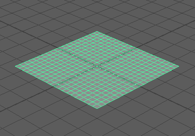
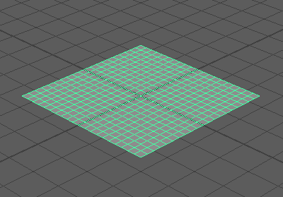
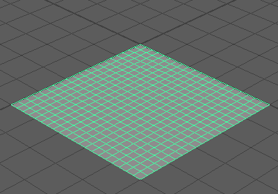
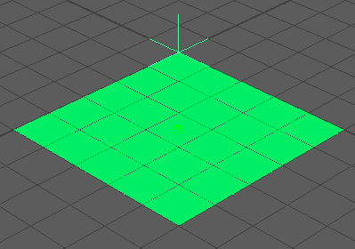
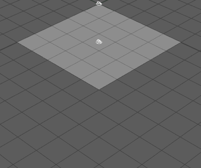
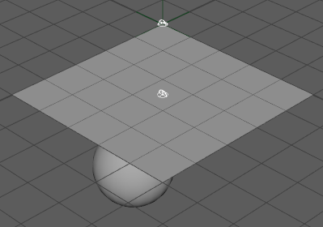

此工作流使用柔体平面和锚点约束来展示一个简单的布料模拟。
- 在新的 Maya 场景中，将 Maya 时间滑块持续时间设为 200 帧，并确保将其设置为从第 1 帧开始播放。
- 通过选择“创建 > 多边形基本体 > 平面”(Create > Polygon Primitives > Plane) >
 来创建一个多边形平面。将“宽度”(Width)和“高度”(Height)设为 5 并将“宽度分段数”(Width divisions)和“高度分段数”(Height divisions)设为 20。单击“创建”(Create)。

来创建一个多边形平面。将“宽度”(Width)和“高度”(Height)设为 5 并将“宽度分段数”(Width divisions)和“高度分段数”(Height divisions)设为 20。单击“创建”(Create)。
 - 打开通道盒，然后将“平移”(Translate)值设置为以下值以放置平面：
- X：2.5
- Y：0.0
- Z：2.5
 - 将平面转化为柔体，方法为先选择该平面，然后选择“Bullet > 创建柔体”(Bullet > Create Soft Body)。平面此时是一个柔体对象。
- 选择“创建 > 定位器”(Create > Locator)，在位于平面角上的原点创建定位器。

- 在网格上单击鼠标右键，然后从显示的菜单中选择“顶点”(Vertex)。
- 按住 Shift 键的同时选择位于原点的网格顶点（在平面的角上）和定位器，然后选择“Bullet > 创建柔体锚点”(Bullet > Create Soft Body Anchor)。这会将选定的顶点附加到定位器。
注： 如果在 Maya 菜单栏中未看到“Bullet”菜单，请确保选择了 FX 菜单集（按 F5 键）。如果仍未看到，请确保在插件管理器中加载了 bullet.mll。请参见加载 Bullet 插件。播放模拟。布料因重力作用而降落，但会像受约束的布料那样悬挂在定位器上。
- 下一步，要了解 Bullet 对象如何交互，请创建一个多边形球体，方法是依次选择“创建 > 多边形基本体 > 球体”(Create > Polygon Primitives>Sphere)。将“半径”(Radius)设为 1.00，并将“轴”(Axis)和“高度”(Height)分段数设置为 20。单击“创建”(Create)。
- 在“通道”(Channel)框中，将“平移”(Translate)值设置为以下值以定位球体：
- X：2.0
- Y：-2.0
- Z：3.0
 - 依次选择“Bullet > 创建被动刚体”(Bullet > Create Passive Rigid Body)，以将球体包括在解算中。将“碰撞对象形状类型”(Collider Shape Type)设为“球体”(Sphere)。
- 播放模拟。由于您已将球体设置为被动刚体（这会将球体包括在解算中），布料垂挂在球体上面。
- 请确保布料具有足够多的分辨率 (UV)，然后在“属性编辑器”(Attribute Editor)的 BulletSoftBodyShape 设置中激活“生成弯曲约束”(Generate Bend constraint)和“自碰撞”(Self-Collision)。请确保在“属性编辑器”(Attribute Editor)中，BulletSoftBodyShape 的“柔体特性”(Soft Body Properties)
和“弯曲阻力”(Bend Resistance)设置不会设成太高，并且“线性刚度”(Linear Stiffness)值较低。
注： 您可以通过将解算器的内部帧速率设置为 120 Hz 来改善解算行为。